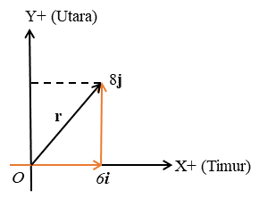
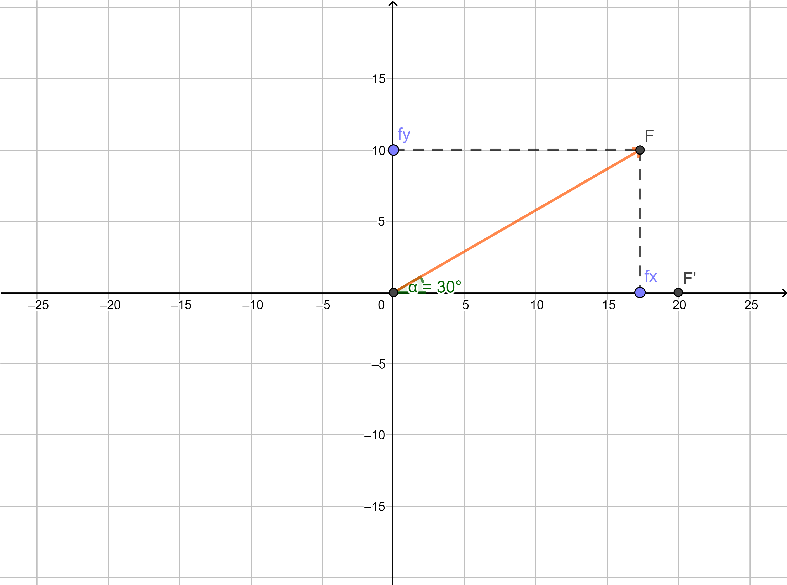
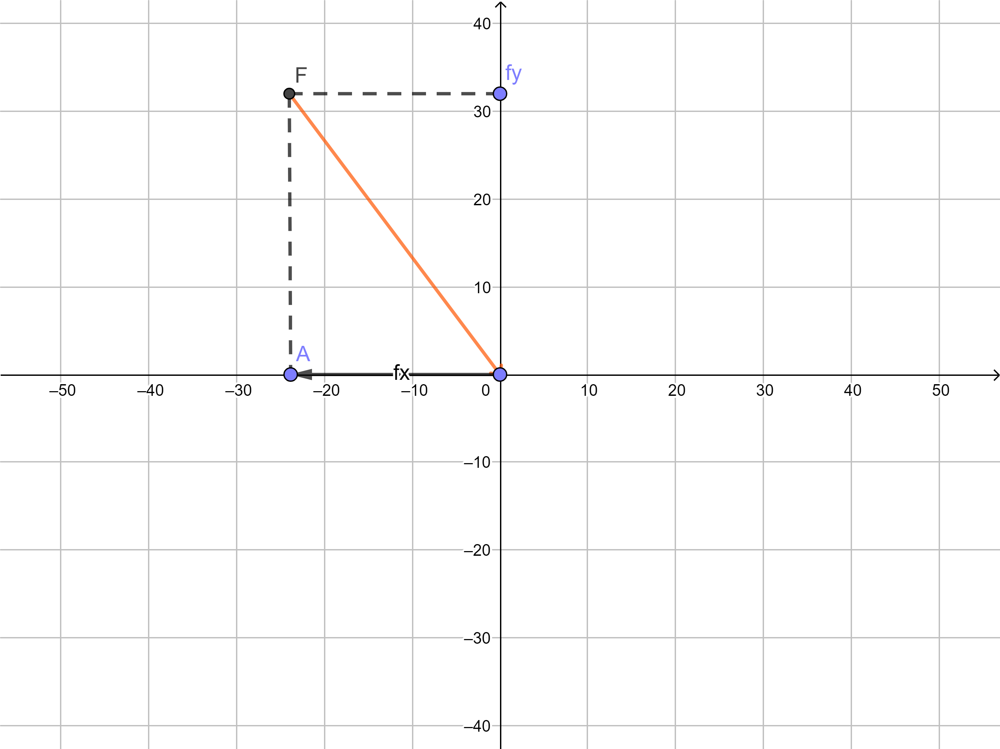

.png)
- Menentukan besar dan arah vektor
- Suatu benda berpindah 6 m ke timur, kemudian 8 m ke utara.
Tetapkanlah arah timur sebagai sumbu X positif.
- Nyatakan vektor perpindahan ini dalam vektor-vektor satuan.
- Tentukan besar dan arah vektor perpindahan
Gambar 1.4 Sketsa soal
Penyelesaian:
- Perpindahan pertama 6 m ke timur dinyatakan oleh 6i m. Perpindahan kedua 8 m ke utara dinyatakan oleh 8j m.
Dengan demikian vektor perpindahan dari posisi awal ke posisi akhir dapat dinyatakan sebagai berikut:
$r= (6i + 8j) m$
- Besar perpindahan dapat dihitung sebagai berikut.
$r= \sqrt{r_x^2+ry^2}$
$ = \sqrt{(6)^2+(8)^2}$
$ = 10m$
Arah perpindahan dapat dihitung sebagai berikut$tan \theta =\frac{r_y}{r_x}$
$ =\frac{8}{6} = \frac{4}{3}$
$ \theta= 53^0$
Besar perpindahan adalah 10 m dan arahnya membentuk $53^0$ terhadap sumbu X positif
- Menentukan komponen-komponen suatu vektor
- Tentukan komponen-komponen gaya
pada sumbu X dan sumbu Y, kemudian nyatakan vektor-vektor
gaya tersebut dalam vektor-vektor satuan, untuk kasus-kasus berikut.
- Gaya 20 N berarah $30^0$ ke utara dari timur.
- Gaya 40 N berarah $53^0$ ke utara dari barat.
Penyelesaian:
Petunjuk
menggambar sketsa soal
- Tekan untuk menggambar titik koordinat
- Tekan , lalu pilih untuk menggambar ruas garis yang mehubungkan antar titik koordinat
- Tekan , lalu pilih membentuk sudut yang diinginkan.
- Untuk lebih jelasnya simak videk dibawah!
-
Gaya F = 20 N berarah $30^0$ ke utara dari timur
ditunjukan pada Gambar 4 (a).
$F_x = 20\hspace{0.2cm}cos\hspace{0.2cm}30^0i$
$\hspace{0.6cm}=20(\frac{1}{2} \sqrt{3})i$
$F_x= 10 \sqrt{3i} N$
$F_y = 20\hspace{0.2cm}sin\hspace{0.2cm}30^0j$
$\hspace{0.6cm}=20(\frac{1}{2})j$
$F_y= 10j \hspace{0.2cm} N$
Vektor gaya $ F= (10\sqrt{3i} + j) N$ -
Gaya F = 40 N berarah $53^0$ ke utara
dari barat ditunjukan pada Gambar 4 (b).
$F_x = 40\hspace{0.2cm}cos\hspace{0.2cm}40^0i$
$\hspace{0.6cm}= (0,6)(-i)$
$F_x= -24i N$
$F_y = 20\hspace{0.2cm}sin\hspace{0.2cm}30^0j$
$\hspace{0.6cm}=20(\frac{1}{2})j$
$F_y= 10j \hspace{0.2cm} N$
Vektor gaya $ F= (10\sqrt{3i} + j) N$

(a)

Gambar.4(b) Sketsa soal